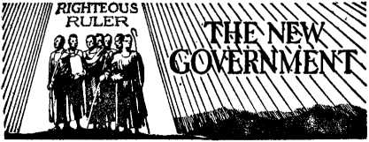
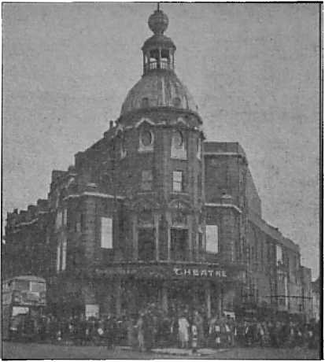
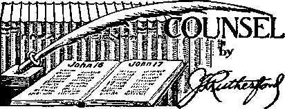

Acts of The Theocracy in New England Roger Williams, Jehovah’s witness
The Forgotten God
The Penalty to the Nations for Forgetting
Jesuit Cunning Utilizes Communism
Instinct and Reason in Birds
Five Cents a Copy One Dollar a Year
Vol. XXIII No. 583 January 21, 1942
31.25 in Canada and Foreign Countries
Published Every Other Wednesday
Acts of The Theocracy in New England (1)
Protestant Theological Schools
The Gathering Shadows of Armageddon
Spent His First 11 Years in Bed
The New Government
New Jersey — Card-Playing — Honest Man
New York — Ten Cents to See Liberty 15 Counsel by J. F. Rutherford
Pennsylvania — Making $5 in Philadelphia 19
Under the Totalitarian Flag
Manila Reports Fifth Columnists
Filthy, Liquor-soaked Mediators
British Comment
Dialogue with a British Clergyman
Instinctive and Reasoning Powers
Published every other Wednesday by WATCHTOWER BIBLE AND TRACT SOCIETY, INC.
117 Adams St., Brooklyn, N. Y., U. S. A.
Editor Clayton J. Woodworth
Business Manager Nathan H. Knorr
Five Cents a Copy
$1 a year in the United States $1.25 to Canada and all other countries
NOTICE TO SUBSCRIBERS
Remittances: For your own safety, remit by postal or express money order. When coin or currency is lost in the ordinary mails, there is no redress. Remittances from countries other than those named below may be made to the Brooklyn office, but only by International postal money order.
Receipt of a new or renewal subscription will be acknowledged only when requested. Notice of Expiration is sent with the journal one month before subscription expires. Please renew promptly to avoid loss of copies. Send change of address direct to us rather than to the post office. Your request should reach us at least two weeks before the date of issue with which it is to take effect. Send your old as well as the new address. Copies will not be forwarded by the post office to your new address unless extra postage is provided by you.
Published also in Afrikaans, Bohemian, Danish, Dutch, Finnish, French, German, Greek, Hungarian, Japanese, Norwegian, Polish, Portuguese, Spanish, Swedish, Ukrainian; also special Australian edition in English.
OFFICES FOR OTHER COUNTRIES
England 34 Craven Terrace, London, W. 2
Canada 40 Irwin Avenue, Toronto 5, Ontario
Australia 7 Beresford Road, Strathfield, N.S.W. South Africa 623 Boston House, Cape Town
Entered as second-class matter at Brooklyn, N. Y., under the Act of March 3, 1879.
Acts of The Theocracy
♦ The first advent of the Lord was followed by the fascinating experiences of the apostles and others recorded in The Acts, and there set down for the comfort and guidance of the people of God who followed them. The second advent of the Lord, and the setting up of the true Theocracy (not the theocracy of the god of this world, the Devil, which has mimicked it for nineteen hundred years— 2 Corinthians 4:4), dates from the events recorded in Matthew 24: 7; Revelation 11:18; 12:9,10, and these fix the time as the fall of 1914.
It is now in order to record, for the benefit of those now living, and for those that shall follow them, some of the acts of Jehovah’s witnesses. These have often been published in Consolation, and in its predecessor. Of late they have usually referred to those acts in foreign countries. Now they refer to America, and in this, the first of an intermittent series, they refer to interesting events that have taken place in New England, things that have been done by Jehovah’s witnesses, and to them; their achievements and their friends and their enemies.
The scribes and Pharisees did not say in so many words that Jesus was a nuisance, but that is the way they felt about it when they asked Him, “Say we not well that thou art a Samaritan, and hast a devil ?” He was doing the Father’s will and they could not understand it. That is about the status of Jehovah’s witnesses. At a New England town meeting in Civic Repertory Theatre, Boston, the editor of Liberty magazine was asked if Jehovah’s witnesses are not a fifth column, and he replied, “No, but they’re an awful nuisance.” Thanks, Mr. Oursler; Noah was a nuisance to the people that did not believe there would be a shower, but he kept right on telling them; and when it started to rain, the ark looked better to those inside than it did to those who were trying to find umbrellas.
CONSOLATION
“And in His name shall the nations hope.”—Matthew 12:21, A.R.V.
Volume XXIII Brooklyn, N. Y., Wednesday, January 21, 1942 Number 583
Acts of The Theocracy in New England
(In Two Parts—Part 1)
Roger Williams, Jehovah’s witness*
HE field experiences of one of Jehovah’s witnesses who lived in New England three hundred years ago will be of absorbing interest to all lovers-of liberty at this time. Judge Rutherford, in his memorable address at Detroit, July 28, 1940, said:
“Men who loved God and righteousness, and who refused to yield to religious tyrants and to bow down to and worship creatures, or things, laid the foundation of the American republic. They caused to be written into the fundamental law that all men. have the inalienable right to worship God according to the dictates of their conscience.”
Roger Williams lived in times when religion and state were united both in Europe and in America. In his day it was considered treasonable to advocate and work for their separation. Religious persecution continued soon after his arrival in Boston, in 1631. The Puritans had preceded him and had become the established religion of the New England Colonies. He later found a liberal group at Salem, Massachusetts, with whom he sought to preach the gospel of Jesus Christ, and spread the light of truth according to the “rockie convictions” and enlightened conscience with which he was blessed at that time.
The Pilgrims and Pilgrim clergy there soon stirred up severe opposition to him. These religionists conspired to rid the country of all men “who obeyed not the inexorable will of God”, not as each in-
• Contributed.
dividual understood it, but as the established religionists interpreted it.
Persecutions nearly equal to the Inquisition in cruel tortures were practiced. Williams was arrested and brought to trial charged with entertaining “dangerous opinions”. Nd lawyer dared to defend him. He stood alone and made his own defense against the hostile court. The Bay governor, twenty-five court magistrates, the deputy sheriffs, and all the clergy of the colony were present. Longacre describes it as the most spectacular assembly and trial, and the most far-reaching in its results, that ever convened in America aside from the Continental Congress of 1776, which was made possible only by the courageous stand of Roger Williams at this eventful trial. His eloquent plea and “testimony against them” lasting many hours succeeded in forcing a division between the magistrates and the deputies—but the clergy got busy.
They lobbied amongst those who showed signs of agreeing with him, and thus influenced those present to bring about his conviction. Though worn and fatigued, through hours of grilling, he firmly maintained his integrity. He faced the court and said, “I shall be ready not only to be bound and banished, but to die also, in New England for the truth.”
He pointed out to the court that he recognized only Jehovah as the one supreme God, and that the civil authorities have no jurisdiction over the conscience on religious matters, and that the civil government had a right to function “in civil matters only”. Thus he pioneered the way for the separation of religion and state in America.
The burden of his message was that all men should be free to worship or not to worship according to the dictates of their own conscience. The court ordered Williams banished.
He was denounced as “a rebel against the divine Church order”. He bade goodbye to his beloved wife and child at midnight and fled into the wilderness. He faced a cold and wintry blast and a blinding snowstorm. Later, of his experience he wrote to a friend: “I was unmercifully driven from my chamber to the winter’s flight, exposed to the miseries, poverties, necessities, wants, debts, hardships of sea and land in a banished condition. I was sorely tossed for fourteen weeks in a bitter winter season, not knowing what bread and bed did mean, without bow or arrow, spear or club, hatchet or gun, where no white man has ever trod, eating roots and nuts and acorns where I could find them until I reached the wigwams of the savage Narragansett tribe of Indians.” There he found refuge and shelter. A real pioneer. A fugitive from injustice and religious persecution.
His great love and kindness won the good-will of those savage elements and awakened their sympathies. He prospered, and established the republic of Rhode Island. The little republic became the wonder and admiration of the world and the haven of the oppressed of all lands. The- Puritans later, fearing his rise to power, sought to arrange a compromise with him; but to this he replied by messenger: “I feel safer down here among the Christian savages along Narragansett Bay than I do among the savage Christians of Massachusetts Bay Colony.”
A learned student of history says: “A new society was formed in Rhode Island upon the principles of entire liberty of conscience, and the uncontrolled power of the majority in secular concerns . . . which principles have not only maintained here in Rhode Island but have spread over the entire Union, ... and given laws to one-quarter of the globe; and dreaded for their moral influence, they stand in the background of every democratic struggle in Europe. Another historian says: “He sowed the seed of liberty which brought forth a bountiful harvest; we enjoy its multiplied blessings.” In those days every man’s religion was'dictated by the state; the state compelled church attendance on Sunday; the people were taxed so that the state supported religion, whether they made any profession of religion or not.
The Puritans believed in religious liberty, but this liberty was not to be enjoyed by any dissenting groups which were not in agreement with the Puritan religion. Oliver Cromwell exposed and denounced this fault when he said: “Is it ingenuous to ask liberty and not give it? What greater hypocrisy for those who were oppressed by the bishop to become the greatest oppressors themselves so soon as their yoke was removed?”
George Bancroft says: “He was the first person in modern (times) to assert in its plenitude the doctrine of the liberty of conscience, the equality of opinions before the law. . . . Williams would permit persecution of no religion, leaving heresy unharmed by law, and orthodoxy unprotected by the terrors of penal statutes. . . . Longacre says: “While the people of Rhode Island did not always adhere strictly to the ideals of Roger Williams after he passed off the stage of action, yet they were exceedingly jealous for the preservation of their peculiar institutions of religious liberty and freedom of conscience which the founder of Rhode Island had bequeathed to them as their peculiar heritage. When the Constitutional Convention in Philadelphia in 1787 left the question of the establishment of religious liberty and of a state church untouched and undecided in the Constitution which it submitted to the people for ratification, the people of Rhode Island deliberately refused to ratify it unless and until a Bill of Rights was added that guaranteed absolute separation of Church and State, the noninterference in religious matters, and the unmolested and free exercise of the conscience of the individual in matters of religious concerns.”
The opposition in that time against the truth was not unlike the violent opposition against Jehovah’s witnesses today.
Who could doubt that Jehovah raised him up and that he put it into the heart of Roger Williams to perform a task in the face of such tremendous opposition? Today we find the same spirit moving the hearts of His witnesses. The full confidence that Jehovah is backing them up enables them to carry on in the work of announcing the New Government that shall stand forever, The Theocracy. They are opposed by the combined forces of S^tan as Roger Williams was in his day. With the religious, financial and political influences all entrenched in the seat of governments, a corrupt press and radio, and “legions” of patrioteers ready to crush the life out of those who appear defenseless against them because they insist on telling the truth and obeying God, Jehovah’s witnesses are determined that nothing shall stop them. They know that Jehovah will fight for His people as He did in days of old and in His due time He will completely vindicate His great name, and incidentally His own people, and that time is very near. Hail The Theocracy!
The girl referred to in Consolation No. 504, page 15, is a New England girl. Her parents had had a knowledge of the truth for years, but had not taken their stand for it. They thought their little girl ought to go to Sunday school; so they sent her to a Baptist Sunday school When she had reached the age of 7; but after a few Sundays she would not go any more, saying they did not tell the truth as her mother and daddy believed and taught.
Next they sent her to a Congregational Sunday school, where she stood up for the Bible teaching that only Jesus and the little flock go to heaven and all the rest of the people stay on the earth if they love the Lord; the earth abideth forever, and God will make it like the garden of Eden. The teacher got nervous, and so did the girl, and a third Sunday school was tried. In her third and last trial the girl stood by the Bible teaching that we do not have souls; each of us is a soul, and “the soul that sinneth, it shall die”. When the girl came home she told her mother she didn’t want to go to any more churches, because they don’t teach the Bible.
Recently, this office had a letter from this girl and in it she said:
To prove that one’s course of action is an example to those of good-will, I cite an instance that has filled my heart with joy [and not mine only]. Before I was born my parents attended meetings of the International Bible Students, but took no stand for the Kingdom. Since I was a baby they instructed me as far as they knew, but then for over twelve years did not attend any classes. I was sent to church, but was quickly disgusted with the hypocritical racketeers found therein. I regained the truth, began attending the meetings, and at thirteen made a consecration of myself to do God’s will. For the past five years I have been trying to be faithful to the Lord. All this time my parents remained dormant, not even attending studies, though they never opposed the work.
About two months ago I stated definitely my intention of becoming a pioneer, thus devoting all my time to the honor and glory of the name of Jehovah. Since it meant going away from home, and since I am the only child, it was a blow to my parents, and my mother was especially vexed. Our household was in a miserable tension for about a week. And then it happened! My father came to class and liked it. He went on back-calls with me and had a grand time. He went out in the service, and it surely seemed strange to see him trudging along with a bag of books under one arm and a phonograph dangling at his side. My mother then turned about faee, helped me prepare to leave, and attended meetings. One week after I left home she went out in the service for the first time. Now, about a month later, they have established themselves as two of the Lord’s “other sheep”. They have a wonderful time out in the work each week. My mother was just immersed, and my Dad goes out on back-calls whenever possible, and is conducting a model study.
Jesus was charged with blasphemy, and so none should be surprised that this young girl, still in hqr teens, has been arrested many times, and on the last occasion was at liberty on bonds totaling three hundred dollars for blasphemy in the state of Vermont. If Jesus had been in Vermont when He called the clergy sons of the Devil, vipers, goats, wolves, whited sepulchers, liars and murderers, they would have fined Him ten times as much and tried to kill Him besides.
Why the state of Vermont, and especially the city of Burlington, cannot stand it to have a girl in her teens preach the gospel in their midst is something for the Vermonters and the Burlington-ians to explain.
The arrest for blasphemy was at Rutland, but when Mayor John J. Burns, of Burlington, heard of it, he rushed down there and reported that he had appointed twenty-two secret police in Burlington to check up on “suspicious persons”. The Burlington Press saw that he was making a fool of himself, and gave the mayor this roast:
With that number of “secret police”, the mayor ought to have soon the life history and daily habits of nearly every adult in Burlington. Probably, in his efficient manner, he has us all card-catalogued in his private files safely under lock and key in the city hall vaults.
That’s really quite an idea. It should serve as a check on many a citizen who otherwise might think he could keep his life sort of private and unofficial. If tempted to make remarks to his neighbor which might, when repeated, lead to the suspicion that he was only 99 percent patriotic, the sobering thought that perhaps that very neighbor might be a member of the “secret police” should serve to restrain him from any such careless freedom of speech.
In order to be sure that the job is done thoroughly, and that nobody evades this net for fifth columnists which is being spread in Burlington, we believe the mayor should increase his Gestapo to 27. That would give one for each thousand of population, which would seem to be none too many for this important task.
Five days passed, when the Rutland Herald came out with a condemnation of the methods of Mayor Burns and of his statement that “sometimes the things it is best to do are not quite within the law, but they are effective”. “Political and religious liberty and government by law are the deepest-rooted qualities of a democracy. When we start talking about methods which are 'not quite within the law’, we are striking as hard a blow at American freedom as could be struck by any fifth columnist.”
The result of these editorials was that the blasphemy charges were “continued indefinitely”, i.e., they were dropped. But the blessings that were brought to the girl and to the others involved will doubtless continue forever.
Jesus explained that if you want to receive a real blessing the course to pursue is to do something for somebody who can do nothing for you in return. That being the case, how do you suppose Judge Rutherford felt when he got a little note from Geo. S. Kennedy, from a state institution in New England, in which that gentleman said:
How thankful we men here at the State farm feel to receive those leaflets outlining the work of the blessed Bible Society. My friends and myself are now reading and rejoicing in the message contained in the booklet Refugees, received yesterday. The Lord be with you. We hope some time to make some compensation for the comfort you have given us in the past year. God’s spirit is certainly with the Society. The fountain of youth is there.
After three calls on a New England family the mother of the family wrote to the witness who had called on her:
Thank you so much for the Model Study booklet; we are making good use of it. Don is very interested; he likes to read the answers and look up the verses, in the Bible; also shows surprising interest for his age. While, as I told you, it is many years since I first took interest in thip work, it is only since your coming that I have realized the mighty volume it has grown to be, and also to, realize what a wonderful God the Almighty is when one really comes to understand His Word.
It is very common in New England for Jehovah’s witnesses to be arrested for no cause, to have their property destroyed for no cause, and to lose their employment for no cause, except that they are hated by the Devil and by those who have the spirit of their father the Devil. This was pretty well stated in a noble, broadminded letter to Donald E. Morse, Local No. 340, Vermont, by John P. Burke, in which he said:
You say that one of the members of your local refuses to salute the American flag. I notice that he is a member of the religious sect known as Jehovah’s witnesses. You ask me what action your local can take in the matter. I do not see that there is anything you can do about this. The members of this religious sect, Jehovah’s witnesses, have religious ideas that seem strange to the rest of us. It seems that they are willing to suffer and endure for their religious convictions. I do not believe you could get this member to salute the American flag, even if you did expel him, and it meant the loss of his job, because members of this religious sect are so convinced that they are right that they are willing to suffer the same as Christ and the early Christians had to suffer. Now I must confess that I admire them for being willing to suffer for their beliefs. They may be wrong in their beliefs—I do not know about that—but at least they believe so strongly that they are willing to take whatever the consequences may be. I sometimes wish that we had more union members who believed in the trade uniop movement with the same spirit as the members of Jehovah’s witnesses believe in their religion. Now, Brother Morse, I do not believe in persecuting people because of their religious beliefs. If this member doesn’t want to salute the American flag, let us forget about it. The American flag will still continue to float, even though he does not salute it.
You would not suppose that anybody would set fire to a man’s home because the man was a Christian. Yet that was done at Dover, New Hampshire. Because he is one of Jehovah’s witnesses, firebugs set fire to the home of Alfred Schaal between 3:30 and 3:45 in the morning, while Schaal, his wife and seven children were asleep. Though the fire did $400 damage, no lives were lost.
At Boston, Massachusetts, one of Jehovah’s witnesses, a portly and muscular colored lady, was interviewing a lady about to leave her home for church, and offered to play a record for her, to which the lady consented. While the record was in process of being played the husband came in, stated that Boston was all right until people came around telling residents whom they should serve. He then broke two records and pushed the witness down stairs. Not wishing to lose her balance, the witness laid hold upon that masculine adornment known as a shirt and removed it with neatness and dispatch. Rather astonished the gentleman said, “Christians don’t fight.” To this the witness agreed and said, “Quite right! I am merely protecting myself. Jesus was no sissy, and neither are Jehovah’s witnesses.”
Two of the witnesses up in Vermont in the summertime had the unique experience of a woman rushing out of the house at them when they wanted to play one of these same records in her yard. She finally consented, and, after listening, said, “That is fine, and I apologize for not inviting you in, but I had heard evil reports regarding your work.” The local newspapers had given the people what the religionists want—hatred of their best friends.
At Harrison, Maine, one of Jehovah’s witnesses was about to play a phonograph record for a young man, when a gentleman, evidently his father, grabbed an axe and made a demonstration of wrath which made the interview impracticable. A few nights later this man’s house and barn burned to the ground, destroying 17 cows, some pigs, hundreds of chickens, every stitch of his clothing, and everything else that he possessed. When some heard how he had treated Jehovah’s witnesses they were inclined not to give him anything to get another start, but the witnesses themselves heard of it, and let it be known that they wanted his friends to help him in every way they saw fit: they would not return evil for evil. This had a good influence for The Theocracy in the community. Let the Devil pursue his chosen course as he will, and let Jehovah’s people choose the right way and turn not from it to the right or to the left until the end of the way.
Noah Richardson, Jr., wrote in and said that at the first house he called at in Exeter, New Hampshire, the man came out and sat down and listened to what he had to say about dividing the “sheep” from the “goats”, and said, “I have been a 'goaf long enough; it is time I get on the side of the 'sheep’.” The man took three booklets and was glad, and so was Richardson.
Lloyd B. Stull, one of the witnesses in Maine, writes:
Jehovah’s blessing was manifestly on the distribution of the special booklets for the clergy and officials. Some took the booklets and thanked us for them, and some tore them up right in front of us. One man refused his, and slammed the door so quickly that it caught in the door. Another minister threw his off the porch into the yard; but when I went back that way an hour later it was gone.
I was in Richmond, Maine, one afternoon getting some names and calling on some of the people, but had to leave before I completed my work there, as I had back-calls in the evening. The next morning I was there and making inquiry about where Mrs. Joss, one of. the school board, lived, and they said that was the woman that was murdered last night, and they were looking for the one who had done it. One man asked me if I was a stranger in town; and when I said “No”, and told where I lived, he said that they were picking up all the strangers in town. I wonder if Satan had not planned to bring reproach upon Jehovah’s name there, as I would no doubt have called on this woman that same evening if I had had the time. Of course, the general impression now is that it was her husband that murdered her.
We were assigned territory across the river from Bath, and there was no way to get over to Bath except by crossing a 50c toll bridge. Since then the toll has been removed and we have found the people over there in a very receptive attitude. We did not have the money to pay the toll anyway, and now we do not need it.
At Saugus, Massachusetts, the school board, blinded in their minds by the god of this world, expelled the children of Jehovah’s witnesses from school for conscientious refusal to salute the flag; then they deprived a life-long teacher of her job for the same reason; then they threatened mob action, and only a levelheaded and honest newspaper editor kept theiU from carrying out their threats; then when Jehovah’s witnesses, at great effort of time and money, had provided their own school at Saugus, the same crowd prevented work on the building on the day succeeding the Scriptural sabbath, and even on holidays; then the building inspector condemned a job which he knew was an A-l job, necessitating the pulling down of a fire wall; then the electric inspector performed a similar stunt; then, though the building is mostly windows, they had to put in more windows; then further persecution in the demand, entirely vicious, that a $200 ventilator system be installed; and then the teacher who had taught all her life was forbidden to teach further. That’s going some, even for Massachusetts.
At length came a meeting before the school board, a petition that the little folks be readmitted to the public schools from which they had been unjustly and viciously expelled. The school board were asked to consider the pledge of allegiance to Almighty God which both the parents and the children are willing to make. They were asked also to read and consider Matthew 18:5-7, which reads:
And whoso shall receive one such little child in my name, receiveth me. But whoso shall offend one of these little ones which believe in me, it were better.for him that a millstone were hanged about his neck, and that he were drowned in the depth of the sea. Woe unto the world because of offences! for it must needs be that offences come; but woe to that man by whom the offence eometh!
A courageous newspaper editor published the whole splendid pledge as set out in the Watchtower literature; a radio station broadcast it; and Jehovah’s witnesses are content to abide by the result. They want only what Jehovah God wants, and they well know that it won’t be long now before all their enemies shall lick the dust and never rise to contaminate the earth any more at all.—See Consolation No. 560, page 3.
Public Opinion in Maine
♦ The Supreme Court decision supporting the legality of a Pennsylvania school board rule requiring children to salute the American flag would have been nearer right, nearer sound, if the Court had simply said that that is a matter of State jurisdiction.
But see what a pitiful mockery of education that salute to the flag is!
There is probably not one teacher in twenty,—not one teacher in twenty who can give you a comprehensive, adequate definition of what the flag stands for. What that flag salute rule amounts to is a contemptible, primitive worship. Those people who put such rules into the State law don’t know what they are at work on.
It is probable that not half a dozen members of any State Legislature can give an adequate definition of what the flag stands for.
Can any legislator or any teacher give you a better definition of the flag than the emblem of American rights at sea and in foreign lands? That is, that the flag stands for what is precious to Americans outside of America.
Try another definition. Perhaps this definition is not so good now as it was ten years ago, but, say down to ten years ago, the stars and stripes stood for the Supreme Court of the United States.
As a matter of history it is not too far to say that the Supreme Court of the United States has been the great defender of the American citizen’s individual liberty and initiative, of his rights of property, of his right to protection of the laws.
But the fundamental of that saluting the flag religion is its utter contradiction of good education. What it amounts to is a required worship, worship by the children that don’t know what they are worshiping. They never will learn by that kind of tyranny.
See how much more patriotic it would be if our teachers wTere given the proper opportunity to help their children to understand the government under which they live. Help them to understand the great principles of the law of the land, the great principles of the common law that the fathers brought over with them when they came from England.
To help the children to understand what is the law of the land, what are the rights of an American citizen, to understand what police protection they are entitled to, to understand how their rights can be vindicated in the courts. And especially to understand the function of the court, what the court does for the citizen.
To help the children to understand the duties of government; and how those duties are divided to the city, the State Government, the Federal Government.
It is good that the Supreme Court of the United States is not going over the country to tell the States what they can do about the flag.—Lewiston Daily Sun.
Kennebunk and the Legion
♦ At Kennebunk, Maine, the former commander of the American Legion post was arrested for demanding money over the signature of “the Gestapo for Heil Hitler”. It was at the same fair city that the meeting place of Jehovah’s witnesses was burned to the ground and, when they defended themselves from an attack by armed men at 2: 30 a.m., they were given prison sentences of long duration. It seems too bad that a body of men which has such grand opportunities for usefulness should have allowed itself to use, in America, of all places, methods that entirely belie its name, and have given rise to the fear that if it had the opportunity it would be another gestapo.
Common Sense in Maine
♦ The Maine House rejected a bill requiring school children to salute the flag. Representative Hinckley said, “It is my firm opinion that you can’t legislate patriotism. I think any society whose members are convinced they should not salute the flag should have the right to do as it pleases.” Representative Rollins, a World War veteran, said he believed patriotism is something that comes from within and “if you force everyone to salute the flag you won’t know the loyal ones from the disloyal”.
Protestant Theological Schools
♦ After a college degree, we come to our theological schools for specialized work to adequately prepare us for the work of the ministry; but to most men that experience is a keen disappointment. In many cases we are taught by men who haven’t been much of a success in the ministry themselves. Instead of being taught to know thoroughly the Bible, which is the foundation of Christianity, we are taught innumerable theories. It is no wonder the ministry of our churches seem to have no message for our times.
Modern Christianity presents a strange phenomenon: a Buddhist or Brahmin priest will swear by his sacred texts; a Moslem will live by his Koran; but a modern theologian will study every other book before he consults his Bible. Every author from Plato to Kant and Neitzsche is carefully studied; but Jesus Christ, the 'author of Christianity, is belittled and weighed in the balance, and His divinity is questioned by the theologians who bear His name, and who in their titles as doctors of divinity consider themselves more divine than the founder of their religion.
Perhaps these are a few reasons why the ministry does not possess the language of heaven.—“Rev.” Otis B. Read, in the Boston Herald, February 8, 1941.
The Gathering Shadows of Arqiageddon ♦ As did the old women of the Paris Commune, we are about to step out of character. We are about to doff our lace caps and put on steel helmets. We are about to draw knives from our petticoat pockets and to fall hungrily upon the opposition. Those of us who can profit in transitory fashion from the filchings in the dark night will urge on the clamor in the streets. Profit and fear, hatred and greed, overwrought nerves and terrorized minds, all are being poured into the retort and will explode to the catalyst of war. One by one the doors to sanity are closing. We are like bathers trying to keep their footing in an undertow. The swiftness of the tide increases with each succeeding wave. And the sea that tugs with irresistible force is mantled in Stygian gloom, and no horizon and no beacon is in sight.—The Boston Post.
“Daddy, Where Have You Been?”
♦ Up in the mountains of New Hampshire, and in October, five-year-old Pamela Hollingworth was playing around the edge of a family picnic, and then the picnic got lost, her daddy got lost, the trail got lost, and almost everything else was lost but Pamela herself. She had on a suit of overalls and wore sneakers, but that was all she had when everybody got lost. For eight days she drank of mountain brooks and slept wherever night overtook her, but had nothing to eat. Finally she found a mountain path, and as she came along down it she said to her daddy, as she met him by the way, “Daddy, where have you been? I have been waiting for you.” And all her daddy could do was cry and hug her. And some of the 400 men that helped him find her probably cried, too, when they found that Pamela was all right. She said she wasn’t very hungry, but that it was cold. And maybe she was right at that. There was great rejoicing all over New England when the little lady was found.
Spent His First 11 Years in Bed
♦ Carl Mason is going to see the inside of a schoolhouse for the first time Monday, after spending practically the entire first 11 years of his life in hospitals —including nine years when “I had to lie flat on my stomach.”
He learned to walk less than a year ago, and he’s been out of the hospital only six weeks now, apparently recovered from the tuberculosis of the spine that had gripped him from cradle days.
His mother says that life for him now is “just like a baby’s—learning of many new things for the first time”.
Some of his “firsts” since he left the hospital:
He’s fondled a dog and a cat. He’s walked barelegged in the luxury of pine needles near his home by Oldham Lake. He’s been bathing in outdoor water “instead of just tubs like we had in the hospital”. He’s seen things growing in a garden and—
He’s seen his mother bake an apple pie.
“He can’t get used to the gas range and the refrigerator,” his mother said today, “and when he first came home he asked me what we called the different rooms in the house. You see, he was only eleven months old when he first was taken to a hospital, and since then he never had been in an ordina'ry house.”
But Carl won’t be backward if the kids at school start doing tricks. He has a honey that he can spring—writing wifh his feet.
During his illness Carl got the equivalent of three years of schooling. So he will enter the fourth grade.
The boy is somewhat under weight, but his appetite is good, he can climb a tree with the skill of any of the kids, he likes the same kind of adventure stories they do, and he has a swell collection of stamps.
And, oh yes, he had a session of poison ivy during the summer.—An Associated Press dispatch from Pembroke, Mass.
Getting into More Honorable Work
♦ At Wilton, New Hampshire, a Congregational minister making $25 a week at the job of misrepresenting Almighty God seems to have reformed somewhat. At last accounts he was getting $1.10 an hour as job foreman on a bridge painting job, though still hanging on to his $25 perquisite. The early apostles were fishermen and tent makers and made no effort to clothe themselves with the wool of the Lord’s sheep.
Proposed Label for Liquor
♦ Three Boston physicians, not prohibitionists, and not believers in prohibition, have made an appeal that every bottle of liquor carry a label reading:
Use moderately and not on successive days. Eat well while drinking and, if necessary, supplement food by vitamin tablets while drinking. Warning: May be habit-forming, not for use by children. If used immoderately it may cause intoxication, neuralgia, paralysis, mental derangement and kidney and liver damage.
Warren, Ohio, Still in U.S.A.
♦ Oscar Burke was found guilty in the police court of the City of Warren, under an affidavit that charged that he unlawfully went “about from place to place upon the streets of said city” to solicit orders for books without having obtained a license so to do, contrary to a given ordinance of the City. The judgment of convic.tion was affirmed in the Common Pleas Court and he now prosecutes error to this Court to reverse both of the judgments referred to.
The Ordinance invoked against the accused is not one of perfect clarity but we do not deem it necessary to place any interpretation on its terms. If Burke was
soliciting orders for books at the time charged, the books which he sought to dispose of were of religious nature. Burke had no financial interest in the sale of them. It is agreed that under another section of the City Ordinance one soliciting drders of this character is immune from prosecution if his solicitation was in fact done for church or religious purposes. Whether the publishing house that furnishes these books was conducting a business for profit is not apparent. It is, however, perfectly apparent that so far as Burke was concerned he was engaged in a religious mission, that the work he was doing was solely of a religious nature and was for the benefit of the church with which he is affiliated. It is not therefore necessary to determine whether under this Ordinance he would have been guilty if he had been engaged in soliciting orders from which he was to profit. It is only necessary to say that the evidence clearly shows that he was en-
Trivandrum convention of Jehovah’s Kingdom publishers, Travancore, India
CONSOLATION
Veronica Wrotan heard the lecture “Children of The King”, but did not get her book until later, on account of grandma’s being overcome with the heat, and she had to leave ahead of time.
titled to immunity afforded him by the Ordinance last referred to. Because the judgment is manifestly opposed to the weight of the testimony the same is reversed.
Judgment reversed.
[Ohio Court of Appeals]
Farr and Middleton, J J., concur in the finding.
Assembly of 2,200 Theocracy publishers at Wimbledon Theatre, London, May 11, 1941
“Great Multitude” Forming
♦ At Coketon, West Virginia, in eighteen months, the number of regular Kingdom publishers increased from 1 to 11. In a single month these 11 put in 689 hours witnessing in rough mountain country, made 34 back-calls, and placed 172 books and 152 booklets. There was a sound attendance of 641.
(To be continued)
The Caron family of Kingdom publishers, New England
Theocratic publisher at a cozy home in London, in March, 1941
Card-Playing in Passaic
♦ Maybe it would not have been so bad if the consistorymen of the Brookdale Eeformed church, of Passaic, N. J., had played cards away from the church, or at a time when they were not having evangelistic services, but when it got out that they were playing in the parish house the same night that evangelistic services were being held in the church proper, and that there were more of them at the card game than at the evangelistic services, it was too much for the minister of the church, “Reverend” Charles E. Wideman, and he said it was either the cards or him: he wouldn’t stay in such a church under such conditions.
Honest Man in New Jersey
♦ An honest man was found in New Jersey. Richard Grabowsky found a handbag in his car containing $255 in cash and $800 in government bonds, and notified the police. The explanation was simple. A young woman’s car was parked behind that of Grabowsky. She could not get her car out until she moved his car a little. She climbed into his car, laid her handbag down on the seat beside her, and moved the car so she could get out. Straightway she forgot about the handbag, but thought of it afterwards, and tried to find it. The police found her first and gave her her bag.
Pollution by Vaccine
♦ There are people who believe it is not right to pollute the blood by injection of vaccine. In the township of Penn-sauken, New Jersey, ten of the children who thus believed were expelled from the public schools by reason thereof. Why those whose children are already fully “protected” by having various kinds of vaccines pumped into their blood should refuse education to those who are not thus “protected” is one of those puzzles that only the half-witted can understand.
Might Make a Good Employee
♦ The “Reverend” Samuel C. Bilbrough, Methodist minister in New Jersey, resigned to go into the business of making terrazzo chips used in floorings in fine structures, and will have his headquarters in Texas. He might make a good employee, though some will not have exclergymen in their employment, as they are liable to be disorganizers. They know it all, and it is hard to handle people that in their own eyes are all-wise. But Mr. Bilbrough might far better be making marble chips than engaged in a business devoted to dishonoring God’s name, such as he left.
When it is once clearly seen that the doctrines of “eternal torture” and “purgatory” are infamous falsehoods, the awful nature of religion becomes apparent.
The Big Fire in Jersey City
♦ The $25,000,000 fire in Jersey City, which consumed more than a quarter of the total capacity of storage space in the Port of New York, is said to have been caused by a cigaret. More than a million bushels of wheat, rye and cattle fodder, 1,821 cattle, and other huge items too numerous to mention, were destroyed. Cars, boats, barges, elevators, piers, went like tinder. Accounts of the fire said that in one place a mother cat went three times into a blazing fire and each time returned with one of her little ones. The last time she came back she was badly burned. She lost two babies in the holocaust. It is not believed that sabotage had anything to do with this serious fire.
Working Iron Ore Mines in New Jersey
♦ When old man War comes along he makes good times in the iron business; and so there are five mines in New Jersey busily engaged in getting out ore, some of which have been inactive for more than sixty years.
Ten Cents to See Liberty
♦ For fifty-three years admission to the Statue of Liberty has been free, but Uncle Sam renovated the statue at a cost of $258,000, and concluded to take ten cents each in revenue from the quarter of a million visitors annually that make the ascent to the torch. Incidentally, it is remarked here that, for the first time after its erection and illumination, the lights were turned off from the Statue of Liberty the night Judge Rutherford and his companions were sentenced to eighty years in prison for loving God and proclaiming His Kingdom, in 1918.
The New Gangsterism at Times Square ♦ The new gangsterism broke out at Times Square, New York city, on the night before election. A sound-truck came all the way from Rhode Island under the sponsorship of the Independent Speakers Bureau for Willkie. At 10:15 p.m. it had to limp away with one of its loudspeaker wires cut and the air let out of one of its tires, and with the speaker entirely unable to say one word owing to the boos of the mob. There were plenty of police on hand to protect the rioters. No protection was given to the truck.
Compulsory Church-Going
♦ In Buffalo, New York, “Reverend” Bernard Campbell, Episcopal, proposes that the Government should require children to attend churches of their choice on Sundays, and send truant officers after them if they don’t come. Business must be slow along the lines of his particular racket.
Relief Milk Distribution
♦ In New York city henceforth each child under 16 of a family that is on relief will get a pint of milk every day; a good, sensible arrangement. The coupons, given to the children at school, are good at 20,000 food stores in the metropolitan area.
25,000 Living in Cellars
♦ One of New York’s charity organizations, after a partial survey, estimates that there are still-25,000 living in New York cellars, 10,000 of whom are children. Two-thirds of these unfortunates are janitors, most of them living more than the legal four feet below the street level, and therefore living in semi-darkness. A third of the cellars have no bathrooms and fire hazards are common.
New York has a style of architecture, imported from the Netherlands centuries ago, which encourages the occupancy of floors below the street level.
Died in Three Hours
♦ At Little Valley, New York, Harold Milks, eleven years of age, accidentally cut his finger while chopping wood. Rushed to a hospital to save his finger, he was operated upon successfully. Then he was given a serum to prevent lockjaw, went into convulsions immediately, and died in three hours from the time of his injury. The serum killed him, in spite of all the doctors and nurses could do to save him.
New York Subways
♦ New York subways are so ample that in case of an air raid the entire population of the city could be hidden in them without any question. An average subway station can shelter 16,000 individuals, it is claimed, and some think the immense size of the newer subway stations had that very thing in view.
Out Go the Pins
♦ As soon as the New York school children were let out to study religion, they began to wear pins, to show what church they were attending, and thus a work of proselyting at once began. And when it did begin the school authorities had the good sense to stop the issuance of the pins forthwith.
WHAT Almighty God has caused to be written in His Word, The Bible, of and concerning others that have gone before serves to furnish a guide to those who are now seeking the way of faithful service and everlasting life.
The destiny of the nation of Israel foreshadowed the destiny of “Christendom”, that is, the nations that call themselves "Christian'”, because such nations openly declare themselves to be the servants of Almighty God. Therefore such nations are in an implied covenant or solemn agreement to be obedient to God. The things that came to pass upon Israel, the typical nation, were ensamples, or types, of what must come to pass at the end of the world affecting particularly those nations that claim to be Christian nations. Concerning Israel it is written, at 1 Corinthians 10:11,12: “Now all these things happened unto them for ensamples [types]: and they are written for our admonition, upon whom the ends of the world are come. Wherefore let him that thinketh he standeth take heed lest he fall.”
When that typical nation kept covenant with the Lord God and obeyed the Most High they were favored by Him. That nation-had solemnly promised God to do and perform His will, and the Scriptures show they knew they must do His will in order to receive His blessing. The Israelites knew that they could not forget God and their covenant with impunity. They were specifically warned against religion and told that they must keep away from and avoid such. That warning was to enable them to walk in the way of righteousness and receive God’s blessing. The nation of Israel did forget God and their covenant with Him. They failed to give heed to His warning concerning religion or idolatry. Their leaders turned to human tradition and forgot and ignored the Word of God, and thus made God’s Word of none effect toward aiding His people. Hence Almighty God enforced His judgment against that nation by completely destroying it. That nation, destroyed as such, never again can exist. Amongst the Israelites, however, there were some individuals that remained true and faithful to God, and these were approved by Him and shall have His everlasting blessing.
At Psalm 9:17 it is written: “The wicked shall be turned into hell, and all the nations that forget God.” In this text God, “whose name alone is JEHOVAH” (Psalm 83:18), has made known His fixed rule, which rule applies to all persons or nations that at one time pretended or claimed to serve Him and then turned away from and against the Most High. The text, therefore, is a warning from Almighty God given to all those who have assumed the obligation of serving Him. Set over in exact contrast with the wicked are those who have covenanted to do God’s will and who faithfully and steadfastly abide by that agreement and carry out their covenant; and concerning such it is written: “Blessed is the nation whose God is Jehovah, the people whom he hath chosen for his own inheritance.” (Psalm 33:12, American Revised Version) The destiny for such is life everlasting in peace, joy and glory forever in the presence of the Most High.
The name Jehovah applies exclusively to the Supreme Being. He is the Most High, above all. His name Jehovah signifies His purpose toward His creatures. He is the Almighty God, which means that He is the Creator of all things in heaven and in earth, and that His power is almighty and nothing can successfully resist Him. God created man and created the earth as a place for man to live. All men who will ever gain life everlasting must know and obey Jehovah.
Jehovah provides two primary ways for man to gain a knowledge of Him: (1) by man’s observing the things created, which of themselves silently tell of a supreme power, and (2) by His revealed Word, which is The Bible, otherwise called “The Holy Scriptures”. Jehovah God long ago caused faithful men to write the Bible at His dictation, and this divine record is made for the purpose of giving man needed information. The Bible is the truth, and for centuries has successfully resisted all efforts to discredit it.
All the human race are the offspring of one man, whose name was Adam and who was created by Jehovah God a perfect man. That man disobeyed Jehovah and was sentenced to death, after which all his children were born. For that reason all the human race by inheritance are sinners. The Scriptures truly declare that Jehovah God is love, which means that He is unselfish and that He does good unto all creatures without any gain to himself. Every act of Jehovah is prompted by love or unselfishness; hence He is wholly devoted to righteousness. It is His will that His creatures be wholly devoted to righteousness. He has provided the means for all men to gain a knowledge of the truth in order that they may learn the way of righteousness and live for ever in happiness. We have now come to the time when men are given greater opportunities than ever before to learn the way of righteousness and life.
Jehovah God is the Giver of life; hence it is properly said of Him that He is the fountain of life. (Psalm 36:9) His beloved Son is Christ Jesus, whose position in the universe is next to that of Jehovah. The purpose of Jehovah is to give life to obedient men by and through the ministration of Christ Jesus by His Theocratic Government, when such men are fully obedient to Him. For this reason Jesus said to Jehovah and for the benefit of men: “This is life eternal, that they might know thee the only true God, and Jesus Christ, whom thou hast sent.” (John 17: 3) No man can get everlasting life without knowing Jehovah and obeying Him.
Jehovah commands that all men shall love Him with a pure heart and must be obedient to His commandments in order to prove their love for Him. (Deuteronomy 6: 5, Am. Rev. Ver.) Such is not a selfish command, but is entirely unselfish and for the special benefit of man. There are mighty creatures that are called “gods”, because god means “mighty one”, but there is but one Jehovah, the Almighty God. He is the Eternal One, and there is none other who can give life everlasting to man. It would be inconsistent for God to give everlasting life to anyone out of harmony with Him, and therefore He tells man that if he desires to have everlasting life he must be obedient. Jehovah also commands that man shall make no image and worship that. That requirement is for man’s best interests. If a man devotes himself to an image or thing, that tends to turn his mind and affections away from God and to lead him into destruction. All law and commandments of Jehovah are for man’s good; and the more fully we understand them and obey them, the more we love Jehovah. “The law of the Lord [Jehovah] is perfect, converting the soul: the testimony of the Lord is sure, making wise the simple.” (Psalm 19:7) That which is of greatest importance to man is to gain a knowledge of Jehovah as set forth in the Bible. “If we have forgotten the name of our God, or stretched out our hands to a strange god [such as saluting emblems or images, or giving praise and worship to creatures and things, indulging in religious formalism]; shall not God search this out ? for he knoweth the secrets of the heart.”—Psalm 44: 20, 21.
“This book of the law shall not depart out of thy mouth; but thou shalt meditate therein day and night, that thou mayest observe to do according to all that is written therein.”—Joshua 1:8.
Village-owned Power Lines
♦ Occasionally there is a village or city with enough brains to see that the municipality should own something besides the sewers, pavements, and bridges, so that it may have some income; but for the most part the newspapers, owned by Big Business, fight the idea tooth and nail, so that those that have the biggest piles may keep them. However, Monroeville, Ohio, owned its own power lines, bought electric current at l^c per kilowatt and in December charged its 475 customers nothing whatever for the $1,900 worth of current supplied. In this village nobody pays more than 2c a kilowatt if using 700 or more kilowatts. The charge for the first 15 kilowatt-hours is $1, and after that the rates drop rapidly to the 2c rate.
The Mammoth Cave
♦ Mammoth Cave, in Kentucky, is not exactly eight miles square, because caves don’t come that way, but the park overhead occupies 75 square miles. The temperature underground is always 54 degrees. There are six fascinating trips, one of which requires 7| hours to traverse. One of the treasures is Echo river, 360 feet under ground, which sweeps away in the darkness to nobody knows where. In it are blind fish and blind crabs, and if your nerve is good you may take a boat ride on it for a consideration. There are too many treasures to be named. One of these, Violet City, is a vast room 220 feet long, 120 feet wide and 60 feet high. Five hundred guests a day visit the caverns in summertime.
The New Caverns
♦ The new caverns in Mammoth Cave, recently mentioned in these columns, and formerly accessible only after nine hours of arduous work, can now be reached readily through a 201-foot entry shaft bored through solid rock. One of the new caverns is five miles long, surpassing in gypsum crystal formations anything else of the kind known to man.
Parochial Schools in Kentucky
♦ The assistant attorney general of Kentucky has ruled that the only way money can be legally paid to any school is to join the county school system, accept the county curriculum, use teachers hired by the county school board, and give up the program of teaching religion in schooltime. It is entirely illegal in Kentucky for officers of a school board to use public funds for parochial teachers’ salaries, and is forbidden both by the constitution and by statutes. This is common sense and should be the invariable rule everywhere. But you just wait and see the deal this honest, trustworthy American will get in the next election.
Not a Bad Idea
♦ At the Ohio Methodist conference in Columbus a veteran rural church worker told the delegates that many ministers should leave the pulpit and take up farming. This idea has the Scriptures and common sense back of it. There is no reason why a man who works for his daily bread cannot preach the gospel in his spare time; and the prophet Zechariah, in the 13th chapter, shows that at the last many in the ministry will take up farming, and be glad to do it, they will be so ashamed of the awful doctrines for which they stood sponsor while in the ministry.
Huge Bombing Field in Indiana
♦ The location of a huge bombing field (65,000 acres—more than a hundred square miles) means the removal of 500 families from the lands they have farmed and new homes or means of livelihood must be found for them elsewhere. The huge plot will be three miles wide at the south and spread out fanwise to about seven to ten miles at the north.
Making $5 in Philadelphia
♦ It is awfully hard to make $5 in Philadelphia, and do it honestly; so .the grocers, nearly 200 of them, had to cook up another way to make it. This was the way it was done. The grocer knows some man who is on relief. He gives the man on relief $14 in cash. The man on relief then buys from the grocer $14 worth of orange stamps and $7 worth of free blue stamps. Then the grocer buys the stamps back for $21 and gives the man on relief $2 in cash. The net result is that the grocer is $5 ahead. Then, when he has built up a nice industry in coining $5 off the necessities of the poor, along comes the government, prefers criminal charges against 12, scratches 80 off the list so that they cannot get any more stamps with which to work their racket, and requires 75 more to show cause why they should not have the same treatment. Guilty merchants are liable to 10-year prison sentences and $10,000 fines. So maybe it is better not to make the $5 after all.
Liquid Bituminous Coal
♦ Pennsylvania State College has liquified bituminous coal by extracting the ash and mineral matter with acids. The liquified coal can be stored under a water seal, and makes a hotter fire than either coal or oil alone. It is best burned with oil. It can be used in making resins and plastics.
To Judges Afraid of Men
♦ “For elderly men garbed in robes to tell children they must salute the flag or not get an education is on the face a shocking and ridiculous doctrine.”— Judge William Clark, of the Federal bench.
Why the Teacher Quit
♦ At Carnegie, Pa., Walter B. Sterrett, 64, teacher of history, resigned from the high-school staff.rather than teach children to salute the flag.
Pizzutelli’s Billboard
♦ At Monongahela, Pa., a grocer named Pizzutelli put up a bulletin board stating that in thirty days thereafter he would post the names of all persons who had been indebted to him for one year or more and who, after repeated requests, had refused to pay; also, that he had sent, by registered mail, a promise to each person involved, that his name would be posted. In 36 hours 19 persons made payments on their accounts and others promised to do so on payday. Many a kind-hearted grocer has been ruined by persons who have handed over to others money that really belonged to him. Nobody who owes money to a grocer can honestly participate in the support of any religious racket.
The Cows of Erie County
♦ The cows of Erie county, Pennsylvania, are now to become religious and not give any milk on Sundays; the bulls will be interviewed to see what can be done about it. That seems to be the drift of resolutions of the Erie Ministerial Association, which deplores the distribution of milk on Sunday. Their idea was that the cows should give double quantity of milk on the Scriptural sabbath, which is Saturday. It seems a little complicated, but leave it to religion to find the way out. “What the country needs is more religion” for the cows—and the bulls.
“That’ll Tache Thim Amuricans”
♦ “The Howly Fayther sez to sock it to thim Jehovahs whin ye gits the chanst”; and that, presumably, is the impelling and very likely the only reason why Principal Paul Cassidy, near Erie, Pa., expelled three children of Jehovah’s witnesses because of conscientious refusal to salute the flag, and is planning on taking his spleen out on nine other little folks, to further please the Vatican.
assist in
attacked Geramn™,^.
“Thus. American destroyers, as
Manila Reports Fifth Columnists
By United Press
MANILA, Dec. 11.—The Bulletin reported today that two Catholic priests had been arrested at San Fernando, in Fampanga province, for asserted fifth column activities in the zone of Japanese invasion
I t a k
e
attempts.
The Bulletin asserted that in Manila a signal line between Nichols Flying Field and an air raid tower was cut, supposedly by fifth columnists , and delayed the alarm When the Japs raided the Manila Bay area yesterday.
Air Raid Chief Warden Alfredo G. Eugenio issued detailed instructions to the public for procedure in event of gas attacks.
Jesuit Cunning Utilizes Communism ♦ In the latter part of 1935 The Golden Age (now Consolation) published an article by David Wilkie, of Great Britain, in which that able writer pointed out the connection between the Communist party in Britain and the Roman Catholics of that country. He said:
Take away from the Communist party'the Catholic-born element in Glasgow, Dundee, Newcastle, Liverpool, Bristol, and Cardiff, and it is a well-known fact that the Communist party in Britain would cease to exist. Take away the Scoto-Irish element in Scotland, and the Anglo-Irish element in England, in London and Liverpool particularly, and there would be no “Communist party of Great Britain”. Every member of the House of Commons knows that the Catholic population of Britain is the spawning-ground for the Communist party.
The truth about Communism and Fascism is that there is ample evidence to show that the Roman Catholic church has been, and is, the spawning-ground of both of them. (This is exactly what was “arranged” in Germany: the Roman Catholic Rhineland was the hotbed of “Communism”, and Roman Catholic Bavaria the homing-ground of “Nazism”.) The Communist party in Britain, and in most countries, is one half captured by the Jesuits, and the fake, promoted, systematic conflict of these. two antidemocratic forces, “Communism” and “Fascism”, is a conspiracy to lead the public to accept “Fascism” as the alternative to “Communism”. . . .
Any man who ignores the existence of the Jesuit order is unfit to govern. . . . The climax of their machinations during the last 100 years is, they have virtually recreated the “Holy Roman (Catholic) Empire” in the heart of Europe—Fascist Austria, Germany, Italy, Poland, and Hungary. And these countries, as “swords of the Vatican”, are about to plunge Europe into war, to spread the power of the Jesuits over the rest of Europe by military force. (The Golden Age, November 20, 1935)
This prediction is now a livid reality. Poland was evidently “liquidated” because it failed to measure up. The line-up is otherwise intact and enlarged.
As to the “Communist” bogey which the Jesuits use to drive the people toward “Fascism” against their will, the columns of this journal have consistently called attention to the fact that Communism is being used by the Jesuits as a tool and a means to stir up misgivings (although many Communists may be unaware of that fact). There is at present persistent talk of a coming “revolution” in America. The rumor is in all probability a manufactured one, without any real basis in fact, except as the Jesuits may manipulate matters to make it an actuality.
And now, by way of confirmation, the noted columnist Westbrook Pegler points to the startling fact that Catholics are increasingly active in Communistic circles. He says, in the New York World-Telegram of June 28, 1941:
. . . explain how it comes we find such names as Hogan, Curran, Ryan, Cannon, Connelly, Dunn, Bridges, O’Connor, Madden, Foster and Quill on the roster of those who are either avowed Communists, of one stripe or another, or so closely associated with Communists and so faithful to the party line as to be indistinguishable from the veriest bolo in the Kremlin. These distinctly are not Jewish names. . . .
I do not understand this recent increase in the number and power of the Irish in the ranks of the Communists and their fellow travelers. ... It is, as I have said, a great puzzle—the more so in view of the well-known conflict of the Church and Communism and of the attitude of the Church toward Fascist Franco in Spain, whose fight was indorsed as a Holy War Against Communism.
The picture is not hard to complete. Hitler has said right along that America would be vanquished by a revolution. A revolution must have some excuse for action. Communism is the intended excuse, and the activity of the aforementioned element in the Communist sphere in America will furnish sufficient fuel to start the fire in due course. The “Holy Roman Empire” must be established world-wide, by fair means or foul, and the indications are that the means have been, are and will be exceedingly foul. But their triumph will be short-lived; for when the Roman Catholic Hierarchy, the intended beneficiary, shall say “Peace and safety”, ‘then sudden destruction cometh upon them, and they shall not escape.’—1 Thess. 5: 3.
Filthy, Liquor-soaked Mediators
♦ The confessional box is a trap for the convent, and after the poor girls are once there they are shackled more than ever in the faith of the religion by the priest in the confessional. The girls abandon themselves, body, heart and soul, to the instructions and directions of this un-gentlemanly man—for no true gentleman would ever ask the dirty, filthy, indecent questions in public or private that these men ask many of the girls and women in this so-called holy private place, the confessional—this man, whom we, as sisters and Roman Catholics look to as the mediator between us and God, often in the form of a drunken man. Yes, I have known not a few, and have waited on them in my work at the hospital for a great many years, and I cannot call to my mind one of these “holy men of God” who did not partake of the best liquors obtainable, and I have had to protect more than one from the people there so there would be no scandal.
Then to these liquor-soaked priests I was forced to turn and kneel to confess my sins, to lay bare the innermost thoughts of my soul and most sensitive feelings of the heart and then submit to the most humiliating, shameful questions—so shameful and degrading that I am not permitted to print them or to repeat them.—From The Demands of Royie, by Elizabeth Schoffen.
No Church as a Pro-Cathedral
♦ Jesus and the apostles were put out of the synagogues; so they preached in houses or on mountain tops, or out in the fields, or, on one occasion, from a boat. They just didn’t have any churches, much less cathedrals. All this is by way of noticing the complaint in the Roman Catholic magazine called America that so many churches have been destroyed by bombs in London that “the archbishop, Most Reverend Peter Amigo, finds no church in his diocese that will serve as a pro-cathedral”. If worse comes to worst, this is just a suggestion to the “Most Reverend” Amigo that he might follow the example of Jesus, Peter, and the other apostles and start out from house to house. If he would just do this he would not need any pro-cathedral, and it might lead to honest work as a farm hand. Who knows?
The Discalced “Baby Jesus”
♦ A letter from the ‘‘Very Reverend Father” Vincent, O.C.D., prior of the Discalced Carmelite Fathers, Shrine of the Little Flower, 1125 South Walker street, Oklahoma City, says that “the Infant Jesus lying in his cold manger bed stretches out his tiny hands asking for your love”. If you come across, “the Christ child will repay you a hundredfold.” It does seem too bad to have a “baby Jesus” in such a cold place. Also, it seems too bad that Jesus never grew up, but always stayed a little baby, and a discalced one at that, and had to have somebody beg for Him so He would not have to sleep in such a place forever. Vincent did not say where he would buy a better crib and boarding house for the “baby Jesus”,, or how he would get Him into it; but that is a mere detail. All you have to do is to send along your wad to Vincent and he will do the rest. He is awfully good to every discalced “baby Jesus”. Otherwise, how could he be a “very reverend father”?
Comment on the Bloody Sweat
♦ Comment is asked on the United Press story from Cosenza, Italy, that once a year, always on the day designated as Good Friday, a Catholic nun of that city lies “in religious ecstacy” all day on a small iron bed with blood oozing from her forehead. The key to the manifestation is to be found in the words “religious ecstacy”. The woman is demonized at those times. In other words, surrendering to unseen and evil spirit creatures, she is of a type of organism such that this feat could be performed by them upon her with her consent. The intent is to glorify the Roman Catholic system, of which she is a part, and thus to dishonor God, by making it seem that this is similar to the bloody sweat which came upon the Lord in Gethsemane the night before He was crucified. It sometimes occurs to persons of highly developed nervous systems when under great pressure.
Quebec’s Idea of Religious Liberty
Extract from “Le Droit” of May 30th, Entitled: “No Sale of Bibles Here”
E. M. Taylor, septuagenarian, with a long reddish beard, living at Namur, Que., must spend seven days in prison for having peddled Bibles without permission in the city of Hull. This Biblical old man was refused permission by Chief Robert, but, probably more convinced of the justice of his cause than of that of the municipal regulation, continued his sales in spite of the refusal, which caused him to be haled before the recorder’s court. Imbued with the importance of his mission he was preparing to deliver his message when the sentence put an end to his eloquent discourse. (From The Gospel Witness, June 26, 1941)
Idolatry Now Everywhere
♦ Jesus’ explicit instructions were to perform righteous acts privately, but the Roman Catholic Hierarchy, which is at issue with Him on all points, wants to be in the public eye as much as possible. The St. Paul Dispatch caught the idea. It had a page-wide spread, eight columns, top of page showing how two priests had converted their hotel rooms into chapels “as thousands arrive for Congress”. Why is it necessary to have a big noise and big display in the papers ?
The Southwest News-Press contains a picture of an altar to be constructed in a chapel car aboard a Union Pacific train. This chapel was to be used going to the Eucharistic Congress at St. Paul, so as to get as much publicity as possible.
The West Virginia edition of the Catholic Register states that the “Via Matris” has been permanently installed in the Seeandbee steamship on the Great Lakes, so that there will be no chance to get away from it even on a pleasure cruise.
Time magazine, July 28, 1941, states that “the Roman Catholic press in Ohio enlisted the co-operation of the Standard Oil of Ohio for a campaign of full-page ads and free route maps to popularize auto pilgrimages to Ohio’s Catholic shrines (like Canterbury pilgrimages in the Middle Ages).” That’s pretty good! The Standard Oil pays the bj.ll for advertising the Roman Catholic religious racket.
But that is not the cream of it. A way has been found to put the hooks into Uncle Sam’s jaws and drag him along behind the Roman Catholic Hierarchy’s chariot, and make him pay for the hook and like it too. The Mission San Jose de Aguayo at San Antonio, Texas, has been added to the National Historic Sites administered by the National Park Service. The Mission will be operated as usual, but Uncle Sam will be granted the great privilege of its preservation, restoration, reconstruction, etc., all in the most evident manner a direct violation of the Constitution of the United States.
The Department of the Interior, Information Service, furnished-the facts in a letter released May 9, 1941. The Catholic Church is named as a party to the original agreement and will sit as one of the board, along with “The Secretary of the Interior, . . . the Texas State Parks Board, the Bexar County Commissioner’s Court, and the Conservation Society of San Antonio.” It is an absolute waste of the taxpayers’ money, and it is asking the people of the United States to pay for upholding the glory of the worst enemy of the people of the State of Texas and of the United States.
Professor Morse Admired Lafayette
♦ Morse’s admiration of Lafayette was most sincere, and he was greatly influenced in his political feelings by his intercourse with that famous man. Among other opinions which he shared with Lafayette and other thoughtful men was the fear of a Roman Catholic plot to gain control of the government of the United States. He defended his views fearlessly and vigorously in the public press and by means of pamphlets, and later entered into a heated controversy with Bishop Spaulding of Kentucky.—Letters and Journals, Volume 2, page 35.
The Odor of Religion
♦ It was at the beginning of the sixteenth century that King Ferdinand of Spain and King Henry VII of England, both of orthodox faith, appealed to Pope Julius II to grant a dispensation to Catherine of Aragon, the daughter of King Ferdinand and widow of Prince Arthur, King Henry’s eldest son, so that she might marry Prince Henry of England, then twelve years of age, brother of her deceased husband. The marriage was conceived of and engineered purely in the interest of the political ambitions of the two kings. The law of the Church stood in the way because it forbade marriage with a deceased brother’s widow, and, further, Henry’s immature age made his consent morally impossible. Nevertheless the pope and the kings proceeded. Interesting examples were Pope Julius and King Henry of the sanctity of marriage and of sexual morality in Holy Church, for Henry VII held the English thione under a title clouded by illegitimacy in the children of John of Gaunt and, further, by a liaison between a queen dowager and her squire; Pope Julius’ licentiousness was well-known and, though priest and monk, he was the father of three illegitimate daughters when elected pope. After much consideration Pope Julius II granted the dispensation and the betrothal of the twelveyear-old boy to the widowed Catherine was entered into, to be followed by marriage, six years later, on that boy’s accession to the throne as King Henry VIII. Catherine bore the youthful monarch no male heir and he appealed to Pope Clement VII for a divorce from her, afterwards pressing the appeal with the intention of marrying his mistress, Anne Boleyn. This divorce Clement refused as contrary to the law of the Church; he had, he claimed, no power to cancel the dispensation of Julius II. Moreover, Catherine’s nephew, Charles V, had now become emperor and supported Clement VII in his refusal. Henry’s family had already been liberally treated by the popes in regard to divorces (annulments), and the marriages of his sister Margaret and of . both the husbands of his sister Mary had all been annulled at Rome, two of them by Clement VII himself. Pope Clement was of illegitimate birth, and it was significant of the morality of the age that if England, as so often alleged, had a bastard queen in Henry’s daughter, Elizabeth, the Papacy had a bastard pope in Clement VII. Elizabeth was legitimized by Act of Parliament and Clement by dispensation of his cousin, Pope Leo X. Henry took jurisdiction de facto over the law of the Church and by the enactments of the English State attempted to undo, with reckless hands, the work of Julius II. A compliant archbishop of Canterbury annulled his marriage and an obedient Parliament legislated to suit. Civil and religious shipwreck followed. Pope Clement continued to the end of his life the role of Papal match-maker for children under the moral age of consent.—The Roman Catholic Church in the Modern State, by Charles C. Marshall; pages 240-242.
Quotation from The Arts
♦ On April 18,1506, Pope Julius II laid the cornerstone of the new basilica of St. Peter’s. . . . Bramante said he would be delighted (to do the job as architect). Just let him have the money and His Holiness would see the mortar fly. His Holiness consulted his bankers. They in turn informed him he was broke. (Page 239) It was decided to raise the cash by selling several million dollars’ worth of indulgences. That was the beginning of the strangest sales corporation in the history of the church. . . . The well known banking house of Fuggers in Augsburg obtained the concession for the distribution of the indulgences throughout Germany . . . appointed a certain Dominican (priest) Tetzel to organize their sales campaign . . . offering absolution . . . six guilders for polygamy, eight for murder . . . and crimes . . . still to be committed in the still distant future. . . . Bramante was able to resume labor on the greatest cathedral in Christendom.—By Hendrick William Van Loon, published by Simon & Schuster.
Polish Religious Junk Sent to Spain
♦ Spain already has more religious junk than it can keep up, but when Germany’s forces overran Poland Hitler conceived the brilliant idea of transferring some of it to Spain, working up a little religious enthusiasm for his fight against Russia and incidentally getting at least a few thousand troops to help in his conquest of the world. When Cardinal Segura, primate of Spain, learned that the stuff had been stolen from the Poles he ordered it kept in storage until the end of the war, when, it is his idea, the Poles shall have it back. But the Poles will never see it again. Armageddon will come along and put an everlasting end to it all.
Supplies for Vatican City
♦ Early in June, 1941, the news was published that the pope would probably have a “fleet” of two boats to bring coffee and tobacco from the Americas to Vatican City, which has a total population of around 1,000 persons. How many ships do you think it would take to keep these folks supplied with coffee and tobacco? and are you so simple as to think that is all they will carry? Four months later the pope’s purchasing agent was en route to America to get the desired cargoes.
French Catholics Start Flag Salute
♦ A dispatch from Monte Carlo says, “The ‘salute to the flag’ ceremony, now a daily event in all French schools, originated in the Catholic schools of France.” The type of mind that finds satisfaction in worshiping images would also be most inclined toward emblem worship of various kinds. The item confirms the claim that flag saluting in the United States has covertly been pushed by the Catholic Hierarchy here.
(To be continued)
Comfort for Colored Passengers
♦ Seventy-eight years after the liberation of the blacks from slavery the Supreme Court unanimously decided that colored passengers who buy first-class tickets must be furnished with accommodations equal in comfort and convenience to those afforded first-class white passengers. The railroads need not put white and colored passengers in the same cars where that is against the local laws, but they must provide equal accommodations, even if that puts the railroads to extra expense. A colored Congressman from Illinois was ejected from a Pullman car in Arkansas, in 1937, and carried the case through to the United States Supreme Court, with the above result.
Swift’s Traffic Manager
♦ R. H. O’Hara, Swift’s traffic manager, comes in for some free advertising in Labor. On his word hinges the routing of millions of dollars’ worth of Swift’s meats and other products. By skill in routing, he can make the traffic of a road go up, and then can take the tonnage away and sell the stock short, and nothing can prevent him from making money both ways. If the railroads want Swift’s business they had better buy the coal, ice, draft gears, bumpers, varnish, etc., in which O’Hara or Swifts are interested. A few traffic managers between them control the movement of 2,000,000 freight cars. They constitute a financial oligarchy.
Railroad Business Increasing
♦ An item in an Altoona paper notes that in a given month in 1940 the pay roll of Pennsylvania shopmen was $650,-000 and in the corresponding month of 1941 the pay roll of shopmen and operating workers was $900,000. Freight and passengers are going places in America, in these days.
The North Carolina
♦ At the commissioning of the North Carolina, the $70,000,000 and 35,000-ton battleship, the printed program said it is to be “a good church ship”. The chaplain prayed for it, and John McNulty, reporter for the New York Daily News, said that when he did so the waves “seemed to be beckoning, like calling a fighter from his corner in the prize ring”. And ‘so endeth the reading of the morning lesson’.
You may get into the Kingdom without a sense of humor, but you are missing a lot of fun. Men were made to laugh.
Ghost Ship Was a Dredge
♦ In midwinter a dredge that was being towed out of Jacksonville broke away and, after a search of twelve to fifteen hours, was abandoned and the $20,000 insurance on it was collected. Months later the dredge, thought to be a ghost ship, was found 1,600 miles out in the Atlantic. Nobody wants it. It is paid for. Marine men say it would cost more to find it and bring it in than the dredge is worth.
Fearless Ferry Boat
♦ The longest sea voyage ever attempted by a river ferry boat, under its own power, was completed successfully when the ferry “Cubargo” arrived at Rio de Janeiro, South America, from Norfolk, Virginia. American sailors declined to man the boat, on grounds of prudence, and British sailors were taken across the Atlantic to make the voyage. Britain still rules the waves, apparently.
New Use for Bananas
♦ Those who have landed just right or just wrong on a ripe banana peel will be interested to know that it has been learned from experience that these can be used to good advantage to grease the ways in the launching of ships. The entire banana is used, not merely the peel.
Public Ownership in North Dakota
♦ Do you remember how the Non-Partisan League of North Dakota was “panned” for going into the flouring mill business after producers in that State found their wheat was graded No. 2 or 3 but went out of the port of Duluth as No. 1? Wheat producers were compelled to accept prices for grades established by buyers in Minnesota, and they got tired of receiving the lowest price for their product, and built their own mill. Representatives of big business said they were bound to fail.
During the last five months of 1939, reports the State Industrial Commission, the state-owned mill and elevator earned a net profit of $201,491. Gross profit was $258,000, from which deductions for bond interest and other non-supporting expenses were made.—0 reg on Grange Bulletin.
Fort Wayne’s Utilities
♦ Fort Wayne, Indiana, has its own electric and water plants and derives great profit and benefit from them both. The electric light plant, 31 years old, serves 27,000 home owners and many industries, and supplies current at 3|c per kilowatt-hour, and at lower rates for industries. The plant furnishes free lighting to the streets of the city, and the water plant charges the city no rentals; so the city saves about $200,000 annually on these two items alone.
Milwaukee Water Works
♦ The Milwaukee water works cost $34,000,000 and its debt is now under $3,000,000. In the last 48 years $13,000,-000 of surplus earnings was transferred to the General City Fund, to help reduce the taxes. The total income is around $2,500,000 a year, of which more than $300,000 is profit, after meeting all costs, including taxes and depreciation. The source of supply is Lake Michigan.
Clever with the Telephone
♦ In some unknown manner a couple of clever crooks gained possession of the telephohe of a dead New York city judge (John J. O’Brien) and charged up $5,678 worth of telephone calls, offering to sell oil to Japan, France and Italy, which oil they did not possess. The Japanese sent a vessel to the port where the oil was supposed to be, and found there was no such concern as they had been dealing with. The probable intent was to act as brokers and to get a commission on the oil. The outcome was the big telephone bill, charged to New York city, a loss of $60,000 to the Japanese on the ship sent in vain, and a probable prison sentence for the crooks themselves.
Profitable Boulder Dam
♦ Boulder Dam is a huge success in every sense of the word. It is the largest manmade lake in the world, and stores 28,-989,000 acre-feet of water. Charges for kilowatt-hour energy are as low as 0.34 of a mill; from that up to one-sixth of one cent. Compare that with what you pay. The Government has reduced the interest rate from 4 percent to 3 percent. The dam pays Arizona and Nevada $300,000 each annually and sets aside $500,000 a year to be expended in future development of the Colorado River basin. Boulder is now producing more than 700,000 kilowatts.
The City of Lodi, California
♦ The city makes far more in profits out of operation of the public utilities than it raises in taxes. These funds have been used to a great extent in developing the Lodi Municipal Lake Park and for the $150,000 Lodi Stadium, through the cooperation of the Work Projects Administration.—Sacramento Bee.
The newspapers would now have more appreciative listeners .if they had told the truth about the public utilities.
Earth’s Newly Discovered Wobble
♦ You probably know about the earth’s big wobble, by which, every 26,000 years, the North Pole describes a large circle in the heavens, and incidentally shows there is not an atom of common sense or of fact in astrology. Well, the newly discovered wobble is hot so large. All it does is to change the latitude of the whole country as much as 20 feet in one direction every 14 months. This did not make any difference to you before you knew about it, and it makes none now. But some of the scientists have been worrying about it for 24 years; so you have a right to know about it, anyway.
Causes of the Great Drought
♦ The causes of the great drought in America in the year 1939 are unknown. Some of the suggested explanations offered are the nearness of Mars to the earth in 1939, increased radio activity, more carbon monoxide gas from automobiles in the air, new spots on the sun, draining of marshes, ponds and lakes, and the building of the big dam across the Colorado River. Weather experts laugh at all these explanations, but have no better ones.
New Methods of Measuring Stars
♦ New methods employed in measuring stars make Ras Algethi, 690,000,000 miles in diameter, the largest; Mira next, with 395,000,000 miles; Betelguese third, with a variable diameter up to 360,000,-000 miles; and Antares fourth, with 245,000,000. Ras Algethi is so large that Mercury, Venus, Earth and .Mars could all revolve around our sun within its diameter.
Killed by Cold in Cuba
♦ A striking result of the cold winter of 1939-1940 was that two persons perished of cold in sunny Cuba in the worst cold wave in thirty-six years.
Cleaving the Vargas
♦ The splitting of the Vargas diamond, the third largest diamond ever found, required it to be split and sawn into about 50 diamonds, to get the most out of it. At first, 24 small stones, of about 6 carats each, were sawn off. Then came the big split. In order to get ready for this split, 45 small diamonds and three weeks’ time were used up sawing a channel. Then it took three blows with a chisel to make the big separation, and will require three more cleavages and ten more sawings to divide the stone as planned.‘When the big split occurred, and turned out to be a success, both the expert splitter and the owner of the stone had tears in their eyes, because, had the stone not split as planned, it would have made a difference in values of many thousands of dollars.
Magnolia Auriculata Rediscovered
♦ The magnificent magnolia auriculata, which a learned Alabama botanist reported had disappeared 45 years ago, has been rediscovered. In Baldwin county a specimen was discovered with leaves nearly two feet in length and a flower with a wing span of 43f inches. Hundreds of the trees were discovered about three miles northwest of Garland—blessings preserved by the Creator for the children of the King. They (are you one?) are going to have the best time of any creatures that have ever lived on this earth.
Lucky Cops in New York
♦ At the West Sixty-eighth Street police station in New York a blinding flash of lightning entered through a window, made a brief inspection, found everything all right, and went on out through another open window. It did not hurt anybody, but it put out the green lights in front of the station house, extinguished the monitor board light and the light on the lieutenant’s desk. Otherwise it was well-behaved.
Statues at Mount Rushmore
♦ For fourteen years Gutzon Borglum, sculptor, worked on granite cliffs at Mount Rushmore, South Dakota, chiseling out likenesses of Washington, Jefferson, Lincoln and Theodore Roosevelt which he was rash enough to predict would last 2,000,000 to 3,000,000 years. The figures are on a scale of men 465 feet tall, with faces 60 feet long. Lincoln’s nose is 18 feet long, his mouth 22 feet wide, the pupil of his eye 4 feet in diameter, and his forehead 17 feet from eyebrow to hairline. It is doubtful if any of these huge statues survive Armageddon; and, anyway, Borglum wasted his time.
No Blind in the Kingdom
♦ There will be no blind in Jehovah’s Kingdom. Helen Keller has seen nothing since she was 19 months old, and is now 60 years old. She recently visited Salt Lake City. She loves the mountains, for she saw them once in the long ago. She cannot see them, but she says, “I can feel the cool air flowing off them”; and it makes one’s heart leap to know that perhaps when “the eyes of the blind shall be opened, and the ears of the deaf shall be unstopped” (for she is deaf also) she may be privileged to see them again.
An Appeal to Iowa Hunters
♦ The winter of 1940-1941 came early, suddenly and severely, making it hard for wild life. In Iowa Governor George A. Wilson appealed to hunters to voluntarily close the pheasant season and “go into the fields with grain instead of guns”. This makes one wonder why the hunters would wish to murder those beautiful birds at any time. Why any hunter can find any pleasure in taking away the innocent joy of living from a creature he does not need for food is beyond intelligent human reason.
miiiiiiiiiitiiii»iiiiiiiiiiiii:iiii<iini»iiiii.iiiiiiinitiiiiiiiiiiiiiiitiiitiitiiiiiiiiiiiiiiiitiiiiimiiiimitiHiifiiiiiiiiiiiitiiitiiiiiiiiiiiiimmiiiiHHitiiiiim^
Send now for your 194^ Calendar
The text chosen for the year 1942, to wit, “Blameless in the day
of our Lord” (1 Corinthians 1:8), provides the theme for a calendar picture which is most befitting these days of decision. Highly artistic and novel, the picture clearly and eloquently sets out the choice God’s covenant people must make concerning the great issue of world domination. Beneath is a neat calendar pad, indicating the line of activity of Jehovah’s blameless ones for each month of 1942, naming the special Testimony Periods and also the special endeavors to be made during the intervening months.
The contribution for this service calendar, while it lasts, is 25c each, or $1.00 for 5 copies mailed together to one address.
WATCHTOWER, 117 Adams St., Brooklyn, N.Y.
Send to
Name ............................................................................... Street.................................................................................
City ................................................................................. State ..................................................................................
□ For my contribution of 25c please mail me one 1942 Calendar.
□ For my contribution of $1.00 please mail me five 1942 Calendars.
British Comment
By J. Hemery (London)
[Compiled, this issue, in America.—Ed.)
Dialogue with a British Clergyman
YES, I have been receiving J. B’s pamphlets for years through the post, but I have never got anything out of them. Where does he get all his money from for printing these ?”
“It isn’t his money, it’s our money; people like me voluntarily give what we can to carry on this work and we have our own printing plants; so it’s not done with half the gold reserves of America behind us, as Bernard O’Donnell would have you believe.”
“Well, what’s the object of your coming to me with this ?”
“Because the Presbyterian Church papers have been making false accusations against J.w’s, and we won’t lie down to such lies; so we are personally visiting all leaders and officials of the land, like yourself, with this Kingdom News answering the charges, because now is the time for everyone to finally decide whether he will be on the side of Jehovah or of the world; Armageddon is very near.”
“How do you know this is Armageddon ?”
“I didn’t say this was Armageddon. That is where false statements come in, by misinterpreting our words. I said Armageddon is very near.”
“I don’t see how you can say that; I see no evidence that this is so, and many, many men who have come and gone have thought Armageddon was in their time ; and many men who have more learning than you or I see no proof for this—all the great writers and students.”
“Exactly; they can’t see these things; and that is why Jesus thanked His heavenly Father that He had not revealed these things unto the 'wise and prudent’ of this world, but unto ‘babes’.”
“Well, these men are very humble men, I am sure; I know some of them myself.”
“They may be humble to you, but not before Almighty God; and we know for a certainty that Armageddon is going to take place in our lifetime, because the Scriptures reveal such, and Paul said that true Christians would observe the times and seasons and not be in darkness. So those who don’t see these things don’t understand the Scriptures. There’s no doubt whatsoever that Armageddon is impending.”
“I am amazed, amazed, at the confidence of young people like you being so certain of these things; I am truly amazed; where you get such confidence from I cannot imagine.”
“Well, we have plenty of confidence.”
“Oh, yes, I can see that!”
‘Well, if you read Hebrews 11:1 you will there see that ‘faith is the substance [or confidence] of things hoped for’, and if you haven’t got confidence, you haven’t got faith; and our faith tells us that Christ is now here setting about to establish His great Kingdom, and Armageddon will finally end all evil.”
“I don’t see how you can say Christ is now here; do you mean He has returned ? I cannot believe that.”
“Yes, Christ came again in 1914; that is why you cannot understand these things and the signs of the times—because you don’t recognize that fact.”
“No, I don’t. I cannot tolerate these people who have God all mapped out to dates just like that. Christ may come any time; in fact, He is coming all the time to someone; He came with the Reformation; He came with Luther and Knox; He came with all reformers, and He is coming every day ; He may come tomorrow, or not for years and years; at any rate, I am prepared for any time; He may even come in a corporate state at any time.”
“That is just where we differ, because I believe the Word of God, which definitely proves that Christ’s return was in 1914, and He cast Satan out of heaven; that is why there is so much turmoil on the earth ever since that date. God is a God of order, not of confusion, and He does adhere to time; and having purposed a thing, He does it; and these are the ‘last days’, when God is giving out the warning to all to repent before Armageddon, at which battle only those who trust in Him will survive.”
“Well, why did Jesus die, then?—He trusted.”
“Because it was to fulfill the Scriptures : He died as a ransom for mankind. And now He has come as King; the Scriptures are being fulfilled as never before. However, I see that you don’t agree on these points; and having delivered my message I will be going. I am glad to have had the opportunity of talking to you.”
“Well, you haven’t convinced me one bit on any point; in fact, you have stiffened me against you.”
“And I am more convinced and determined than ever, since talking to you, that I have the truth. Good morning.”
Demonism on a Train
♦ In Jamaica, British West Indies, two of Jehovah’s witnesses were innocently discussing some of the blessings received at a meeting of God’s people, when a soldier suddenly demanded they cease conversation on a subject not to his pleasing. The witnesses continued, after a friendly protest that they were merely exercising their rights, when he forthwith assaulted one of them. Arrangements were made for his arrest at the next station, police came in, and when the soldier came face to face with the result of his conduct he abjectly apologized, received some of the Kingdom literature, and for the rest of the journey was as meek and gentle as a kitten.— A. L. Wilkinson.
The Peaceable Hornet
♦ The maker of gray paper fashions a suspended “umbrella”, builds downwards a central stem, around that a circle of paper cells, honeycomb shape. In each an egg is laid; a grub hatches; its first action is to fasten its tail to the upper end of the cell. The queen mother is out hunting while this is happening. Small flies are caught, masticated on the way home, and are fed to the grubs. Between meals more wood is pulped, more cells made, the “umbrella” is enlarged. Three hard weeks of nest-building, egglaying, fly-catching for an increasing family, is the “business” of the queen hornet, then the first-born are ready to work. All the queen’s duties, except egglaying, are taken over by her daughters. Sons are born late in the season; they do no work. Their faces are white, and if a person, apparently threatened by a buzzing hornet, quietly waits until its white face can be distinguished, he need have no fear of a sting; for there isn’t one! Nor is there a person calm enough to wait and prove it!—Wildwood, in the Vancouver Daily Province.
The Instinctive and
Reasoning Powers of Birds (Part 2)
♦ The Creator certainly has endowed the young plover and wader with a great start in life; and one of its many legacies is the protective color of its downy plumage, which the bird instinctively makes full use of. In most cases, although by no means all, the color of the down blends so well with the surroundings in which the bird first sees light of day that the youngster has only to crouch and remain perfectly still at the danger call, to become almost, if not wholly, invisible. Here the instinctive action stands in good stead; but it will not always do so.
As the youngsters grow older and begin to wander farther afield it is not always good policy to obey the first impulse and “freeze”, because they may not be in surroundings which tone with their plumage at all. Indeed, these may even throw them up in sharp contrast so that the immobile infants become very conspicuous objects, and easy prey to sharp-eyed hunters.
Here, then, reason must take the place of instinct; and so we find that they soon learn to alter their tactics: instead of immediately “freezing”, the brood scatters and each individual dives for a thistle clump, a tussock of grass, or some vegetation that will afford a certain amount of cover.
A peculiar habit which many young waders have, and which is rather difficult to explain or account for, is that of frequently pausing and stooping as though to pick up food while actually scuttling away from danger. The adult lapwing, green plover, or peewit, as it is variously called, goes through this same performance when trying to lure us away from the vicinity of the nest or young; but it is a definite pretense to fool us into believing that it has not seen us. Pretending to feed, thus it will allow us to draw as near as safety will permit, then, apparently unconcerned, will wander a little farther away, so leading us away from its precious charges. One of our master ornithologists gives a possible explanation of the behavior of the young waders by saying “it is possible that they have inherited an instinct which is of no value to them”.
The beauty and marvel of nests as are constructed by the long-tailed tit, chaffinch. wren and dipper, to mention but a few, cannot fail to arouse the admiration and wonder of all who appreciate the works of God; yet the most marvelous thing about them is not evident in the nests themselves, and, in consequence, is too often overlooked altogether. It lies in the fact that when a bird builds a nest for the first time, it does so without any previous tuition or guidance; for its parents, in most cases, pass completely out of its life as soon as it is able to fend for itself, and certainly long before the nesting season comes round again. Neither could it have seen a nest under construction elsewhere, because no pair of birds will allow another in the breeding territory during these important operations. These last remarks do not apply to colony nesting species, which, however, are in the minority.
Yet despite this handicap, the young bird, housekeeping for the first time, finishes the home true to ancestral style, exactly the same as its forebears built before it, and usually even to the extent of using the same materials. How, then, does the bird do it? There is but one possible explanation—instinct. That mysterious guiding power which enabled the unconscious infant to break its way out of the eggshell returns again to its aid in its first important venture in life.
Gulls feeding along the seashore will carry mussels, cockles or other mollusks up into the air and drop them in order to break them. That act, to my mind, shows that the bird has real reasoning power. The carrion crow’shares this habit, but shows an even superior intelligence in the fact that it will make sure that the shells fall on hard, rocky or stony ground, whereas the gull will continue to drop them on soft ground without any results, until tired of doing so. Where the crow’s reasoning falls short, however, is that it invariably ascends to about the same height, and if the mollusk does not fracture after several attempts, it will give it up. It does not seem to realize that the greater the height the harder the fall, which, in view of its other intelligent acts, is surprising.
And so we find that throughout its life the bird is guided by reasoning power as well as instinct; and while it is often difficult to attribute many of its acts to the one or the other, most ornithologists will agree that as the bird grows older the former, for the most part, takes the place of the latter.—A. G. Slatter, England.
Why are such conditions permitted?
What will be the outcome?
These questions and many others are answered in
Judge Rutherford’s latest book—
CHILDREN
The study and knowledge of God’s Word is a necessary requisite to enter into God’s Kingdom. Now is your opportunity to obtain such knowledge. Read and study the book
CHILDREN
384 pages, numerous colored pictorial illustrations. Postpaid to you for only 25c.
FREE
With each Children book will be sent the new 32-page publication Comfort All That Mourn.
WATCHTOWER, 117 Adams St., Brooklyn, N.Y.
Please send me on the special offer the book Children, also Comfort All That Mourn, for which I enclose 25c to aid in publication.
Name .............................
Street ............................................................
City...................................................... State.......................................
32
CONSOLATION